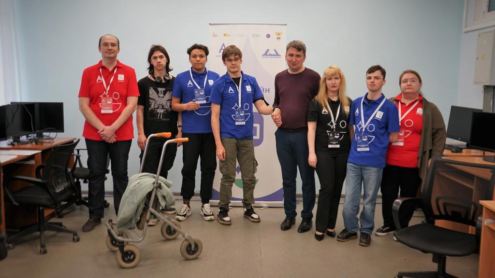
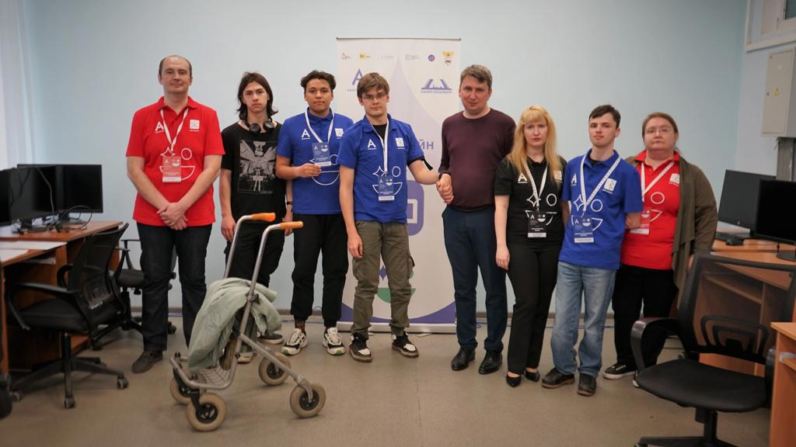
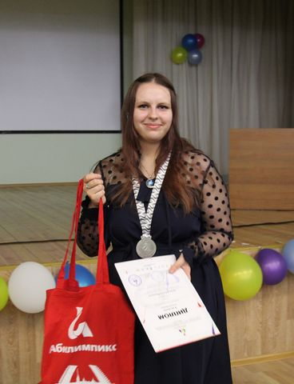
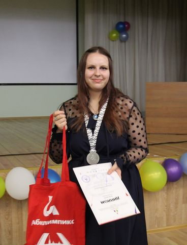

Абилимпикс
Абилимпикс — это международное некоммерческое движение, зародившееся в Японии и развивающееся в мире с 1971 года. В рамках движения проводятся конкурсы по профессиональному мастерству среди инвалидов и лиц с ограниченными возможностями здоровья в возрасте от 14 лет. Смотреть...

В Санкт-Петербурге подвели итоги регионального чемпионата «Абилимпикс» президентской платформы «Россия – страна возможностей» для участников из Санкт-Петербурга. Чемпионат проходил с 15 по 23 мая 2023 года. Среди победителей студенты нашего колледжа!
Победители нашего колледжа!
- 1 место - Белянко Андрей (группа БМ-22-6)
- 2 место - Крупская Анна (группа ИП-22-3)
- 3 место - Запорожец Артем (группаУД-22-11)
Компетенция Сборка-разборка электронного оборудования:
Компетенция Социальная работа:
- 2 место - Левина Алина (группа СР-22-12)
- 3 место - Андреева Дина (группа ЭЭ-21-23с)
Компетенция Экономика и бухгалтерский учет
- 2 место - Гиндуллин Владислав (группа ЭЭ- 21-23с)
- 3 место - Черноусов Денис (группа ЭЭ- 21-23с)
Компетенция Веб-дизайн
- 2 место - Пятница Сергей (группа ИР-20-4)
Компетенция Администрирование баз данных
- 1 место - Пономарева Ульяна
Поздравляем с победой наших студентов и их наставников! Желаем ребятам и преподавателям дальнейших профессиональных успехов и побед!
 


В Санкт-Петербурге стартовал региональный чемпионат «Абилимпикс» президентской платформы «Россия – страна возможностей» для участников из Санкт-Петербурга. В чемпионате Северной столицы примут участие 715 конкурсантов по 87 компетенциям. В рамках соревновательной программы участники продемонстрируют экспертам свое профессиональное мастерство и навыки.
- Сборка-разборка электронного оборудования
- Социальная работа
- Экономика и бухгалтерский учет
Наш колледж является площадкой для соревнований по компетенциям:
16 мая соревновательный день для участников категории «Школьники». На наших площадках соревнуются участники из ГБОУ школа № 154 и ГБОУ школа № 657 по компетенциям: «Социальная работа» и «Сборка-разборка- электронного оборудования».
17 мая соревновательный день для участников категории «Студенты». Среди участников есть и студенты нашего колледжа. Ребята принимают участие в следующих компетенциях:
С 19 по 29 сентября, во всех регионах России, в очно-дистанционном формате проходит Подготовительный этап Национального чемпионата «Абилимпикс» президентской платформы Россия — страна возможностей. Из-за сложной эпидемиологической обстановки финал конкурса 2021 года, был перенесен на 2022 год. Поэтому в текущем году в Национальном чемпионате «Абилимпикс» принимают участие победители региональных конкурсов не только текущего, но и прошло года.
На площадке нашего колледжа проходят соревнования по трем компетенциям:
Среди участников есть студенты и выпускники нашего колледжа!
Компетенция Экономика и бухгалтерский учет
- Наша выпускница Кравчук Ксения
Компетенция Социальная работа
- Кунтикова Софья (группы ЮС-20-14)
VII Региональный чемпионат «Абилимпикс» Санкт-Петербург – 2022
Подведены итоги VII Регионального чемпионата «Абилимпикс» Санкт-Петербург – 2022. 25.04.2022 года состоялась церемония закрытия и награждение призеров и победителей Чемпионата!
Среди победителей и призеров есть и студенты нашего колледжа!
Компетенция Социальная работа
- 1 место - Кунтикова Софья, группа ЮС-20-14
- 2 место – Барсуков Виталий, группа СР-20-33кз
Компетенция «Экономика и бухгалтерский учет»
- 2 место – Кравчук Ксения, группа ЭЭ-20-23
Компетенция «Сборка-разборка электронного оборудования»
- 2 место - Хассан Арсений, группа РА-21-5
- 3 место - Варварин Александр, группа ИР-19-4
Компетенция «Веб-технологии»
- 2 место - Орешников Егор, группа ИР-19-4
Поздравляем ребят и их наставников с достижением высоких результатов в конкурсе профессионального мастерства! Желаем вам новых ярких побед и дальнейших успехов в профессии, учебе и жизни!
Стартовал отборочный этап VII Национального чемпионата по профессиональному мастерству среди инвалидов и лиц с ограниченными возможностями здоровья «Абилимпикс». В Политехническом колледже городского хозяйства 07.10.2021 г. соревновательный день для компетенции «Экономика и бухгалтерский учет».
VII Национальный чемпионат по профессиональному мастерству среди инвалидов и лиц с ограниченными возможностями здоровья «Абилимпикс»
12.10.2021 г. в Политехническом колледже городского хозяйства проходят отборочные соревнования VII Национального чемпионата по профессиональному мастерству среди инвалидов и лиц с ограниченными возможностями здоровья «Абилимпикс» для компетенции «Социальная работа». Соревнования проходят для категорий:
- «Школьники»
- «Специалисты»
В категории «Специалисты» принимает участие выпускница нашего колледжа, Соловьева Алёна. Желаем удачи Алёне!
VII Национальный чемпионат по профессиональному мастерству среди инвалидов и лиц с ограниченными возможностями здоровья «Абилимпикс»
14.10.2021 г. в Политехническом колледже городского хозяйства проходят отборочные соревнования VII Национального чемпионата по профессиональному мастерству среди инвалидов и лиц с ограниченными возможностями здоровья «Абилимпикс» в категории «Студенты» для компетенций:
- «Социальная работа»
- «Сборка-разборка электронного оборудования»<
По компетенции «Сборка-разборка электронного оборудования» в соревнованиях принимает участие студентка нашего колледжа Косарева Екатерина (группа МР-18-7с) Желаем удачи Екатерине!
21 октября 2021 года в Политехническом колледже городского хозяйства прошло торжественное награждение участников и экспертов VI Регионального чемпионата профессионального мастерства для людей с инвалидностью «Абилимпикс».
Подведены итоги отборочных соревнований VII Национального чемпионата по профессиональному мастерству среди инвалидов и лиц с ограниченными возможностями здоровья Абилимпикс». Победительницей в компетенции Социальная работа в категории «Специалисты», стала выпускница нашего колледжа Соловьева Алена! Наставник Алены преподаватель, Иванова Ольга Валерьевна.
Поздравляем с победой и желаем успехов на VII Национальном чемпионате по профессиональному мастерству среди инвалидов и лиц с ограниченными возможностями здоровья «Абилимпикс», который состоится в ноябре 2021 года в Москве.
 
